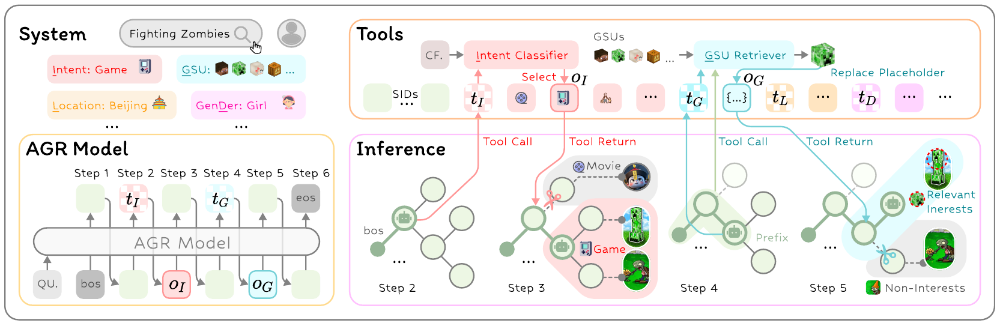
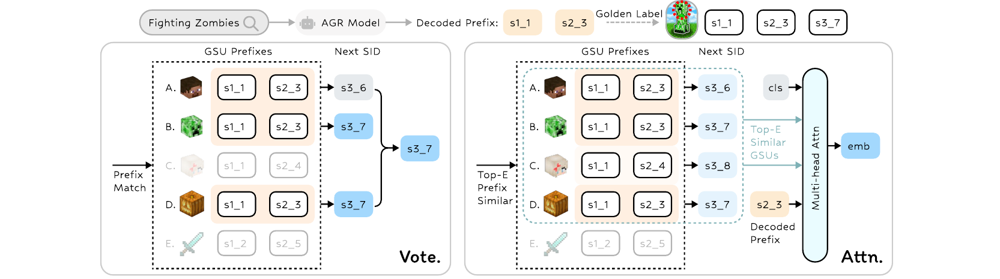

AGR lets a generative retriever request features when they become useful instead of reading every available signal on every request. The model generates an item identifier, pauses to acquire intent or behavioral evidence, and continues along a better-informed branch. The Kuaishou and Fudan team evaluates this interface in production search as well as public benchmarks.
1. Why more features are not always better
Generative retrieval replaces direct item scoring with prediction of a short semantic identifier. Related items share parts of that identifier, so decoding progressively narrows the catalog. Industrial search, however, relies on more than the query: user history, location, intent, and freshness can all matter.
Encoding every feature up front creates two problems. Some signals are redundant or irrelevant for the current request. Others become useful only at a particular point in the identifier tree. Intent may distinguish a movie from a game early in decoding, while behavioral history may distinguish individual games later. Static injection does not explicitly make that distinction.
AGR treats feature acquisition as a decoding decision. Its contribution concerns when and where existing evidence enters the retriever, rather than the discovery of a new feature source.
2. How feature tools enter decoding

The output vocabulary includes tool-call tokens alongside item-code tokens. At each step the model can extend the identifier or request a feature. A request executes an external function whose result becomes a compact observation embedding. The call token triggers the action; the returned observation, rather than the call token itself, enters the next-step context.
Categorical features such as intent and location map to learned observation embeddings. Observations have a distinct positional representation and do not advance the item-identifier depth. The final retrieved output remains an ordinary identifier, with tool tokens removed.
Behavioral tools compress a sequence of historical interactions into evidence relevant to the current prefix. The default voting implementation retains historical items with matching identifier prefixes and returns their most frequent next code. The attention implementation retrieves nearby histories in embedding space and aggregates their successor information, allowing approximate rather than exact prefix matches.

The voting tool asks a narrower question than a full user-history encoder: given the branch reached so far, which continuation has this user preferred? That narrower interface explains why it can avoid repeatedly encoding a long sequence.
Training first teaches ordinary identifier generation, then introduces tool-augmented trajectories. Rule-based construction checks that a request-side feature agrees with the positive item and is not already explicit in the query. Placement reflects the depth at which the observation most sharply narrows the candidate set. Tool-token losses receive dynamic scaling because newly introduced tokens would otherwise dominate the already-learned identifier objective.
The reported backbone is an encoder–decoder model with roughly 574 million parameters. This is supervised tool learning from constructed demonstrations, rather than a reinforcement-learning policy discovered through online interaction. At inference, each beam has its own call budget. Valid identifier transitions and length-normalized comparisons keep tool use compatible with catalog-constrained search.
3. What the contribution amounts to
The central change is moving feature selection inside retrieval. A fixed user vector supplies the same representation throughout decoding; a prefix-conditioned tool can return different evidence at different branches.
The paper also supplies the training and serving machinery needed to make that idea concrete. Tool decisions, external observations, and item codes have distinct roles. Constructed trajectories supervise placement, while call budgets constrain inference. These details matter because adding an intent feature alone would not demonstrate adaptive acquisition.
The relevant comparison therefore holds the feature set constant and varies injection strategy. Otherwise a gain could come entirely from additional information rather than from the decision about when to read it.
4. Read quality and cost together
The industrial history-encoding comparison reports the following values. Cost figures are comparable within that experiment’s matched configuration.
| Industrial configuration | Recall@50 | Training seconds/step | Serving GPUs/1K requests |
|---|---|---|---|
| Feature-free baseline | 0.2863 | 1.163 | 2.38 |
| Direct long-history encoding | 0.3241 | 10.794 | 8.33 |
| AGR with history tool only | 0.3237 | 1.969 | 4.76 |
| Full AGR | 0.3264 | — | — |
The history tool nearly matches direct long-history encoding while reducing its serving cost by about 42.9%. This is a comparison between two ways of using history. The feature-free baseline remains cheaper than either of them.
A separate ablation holds the feature set constant. Static injection reaches Recall@50 of 0.3159, while adaptive injection reaches 0.3264; fixed-position tool calls fall between them. This supports a benefit from placement beyond the benefit of simply supplying more information.
The online experiment uses an initial A/A check followed by an A/B traffic split. The paper reports average serving latency of 35 ms and a 0.205% improvement in its relevance measure: the fraction of requests whose top-four results are strongly relevant. That is neither nDCG nor CTR. Offline comparisons use a generative-retrieval baseline, while the online comparison uses the production system, so their gains should retain their original baselines and metric definitions.
5. Remaining limitations
The authors identify rule-constructed demonstrations, a limited tool ecosystem, and training along correct identifier prefixes as key limitations. The last creates a concrete deployment gap: a tool that helps on the correct branch may not help the model recover after it has already generated an incorrect prefix.
Evaluation under model-generated prefixes would test that gap more directly. A successful production deployment also does not establish a fixed benefit for other businesses. Sparse histories, slow tools, or different relevance objectives can change the trade-off.
6. Practical experiments for search
Start with one existing feature source, such as query intent or recent clicks. Keep the catalog and identifier scheme fixed, then compare feature-free retrieval, fixed injection, and adaptive injection while measuring both relevance and request latency. This separates feature quality from acquisition policy.
A prefix-conditioned voting tool offers a relatively small history experiment. Break results down by history length and query ambiguity to check whether gains concentrate on requests that need additional evidence.
Finally, record call counts, tool latency, and ranking changes after each call. The useful design principle is to make established features available at the moment they distinguish candidates, with enough instrumentation to see whether the extra computation pays for itself.